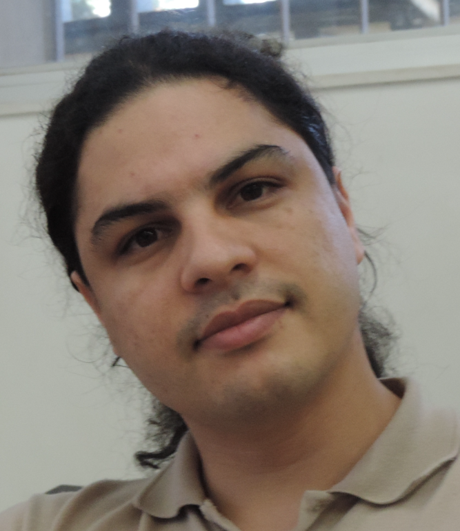
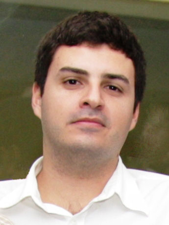
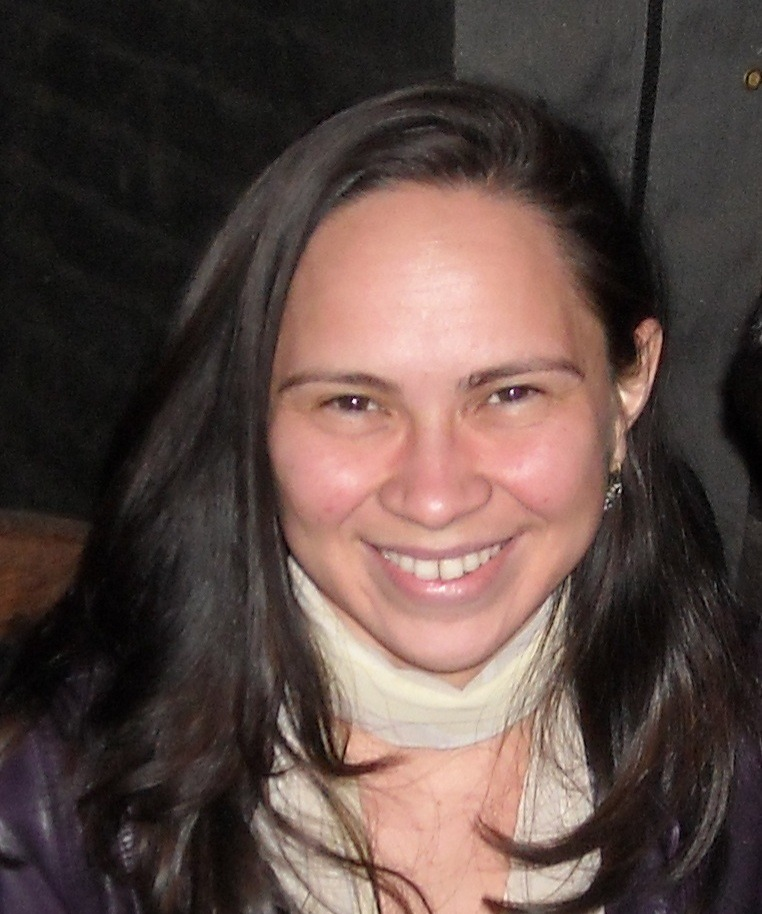
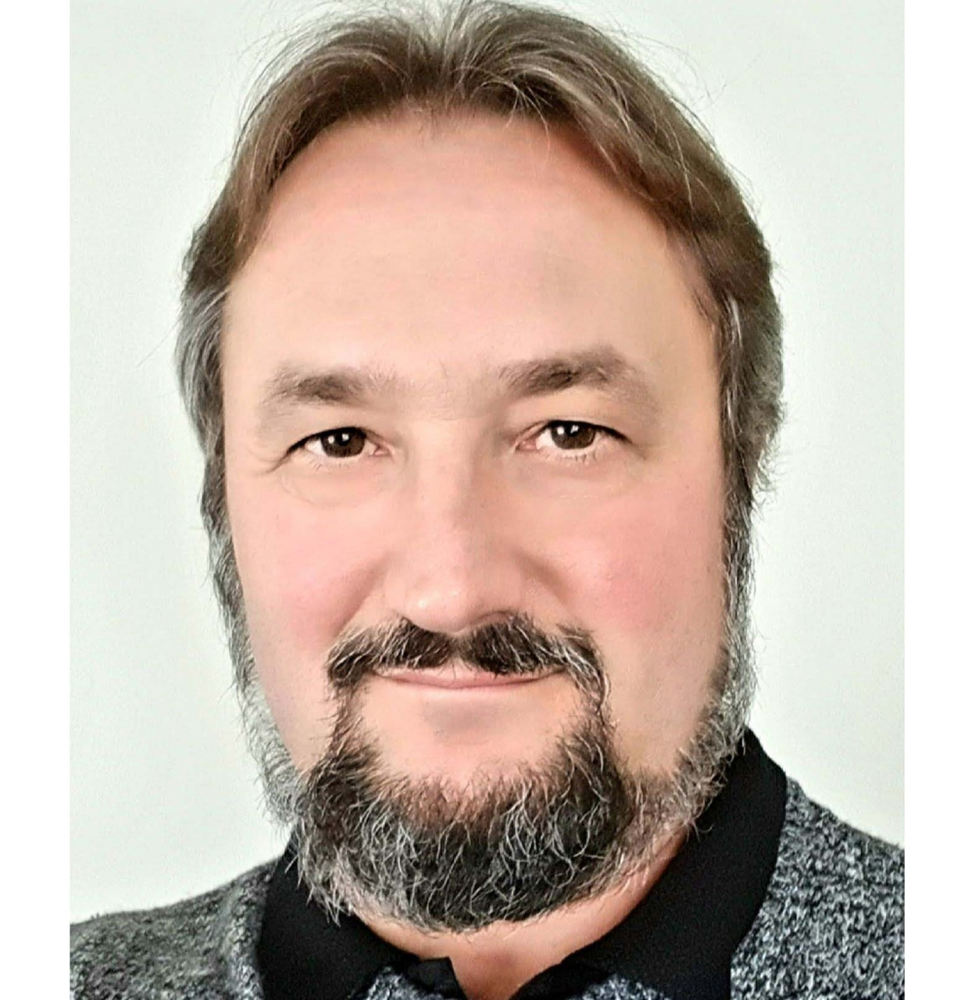
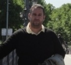
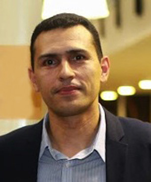
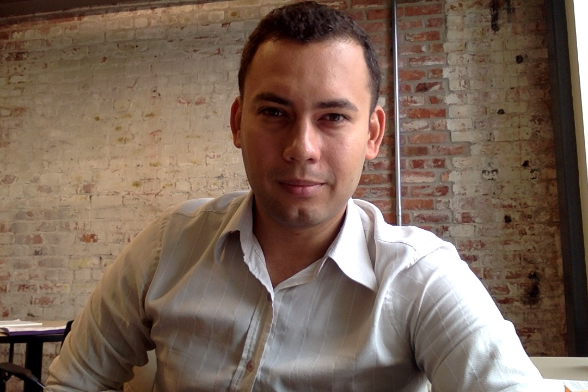
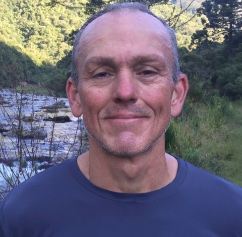
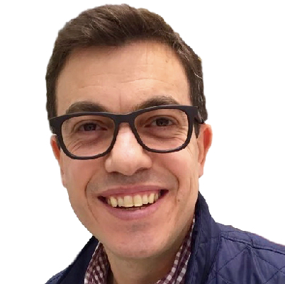
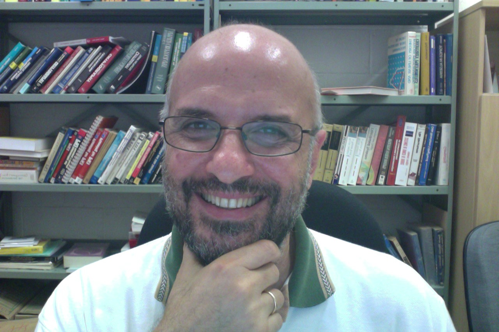

Coordenação 2024–2026

larc.usp.br
diegokreutz.github.io
Ex-coordenadores

Igor Moraes UFF2022–2024
Michele Nogueira UFMG2020–2022
Altair Santin PUC-PR2016–2018
Eduardo L. Feitosa UFAM2014–2016
Aldri L. dos Santos UFPR2012–2014
Anderson C. A. Nascimento UnB2010–2012
Marinho P. Barcellos UFRGS2008–2010
Luciano Gaspary UFRGS2006–2008
Ricardo Dahab Unicamp2004–2006Histórico de coordenações
| Mandato | Coordenador | Vice-coordenador |
|---|---|---|
| 2024–2026 | Marcos Simplício (USP) | Diego Kreutz (UNIPAMPA) |
| 2022–2024 | Igor Moraes (UFF) | Marcos Simplício (USP) |
| 2020–2022 | Michele Nogueira (UFMG) | Igor Moraes (UFF) |
| 2016–2018 | Altair Santin (PUC-PR) | Michele Nogueira (UFMG) |
| 2014–2016 | Eduardo L. Feitosa (UFAM) | Altair Santin (PUC-PR) |
| 2012–2014 | Aldri L. dos Santos (UFPR) | Eduardo L. Feitosa (UFAM) |
| 2010–2012 | Anderson C. A. Nascimento (UnB) | Aldri L. dos Santos (UFPR) |
| 2008–2010 | Marinho P. Barcellos (UFRGS) | Anderson C. A. Nascimento (UnB) |
| 2006–2008 | Luciano Gaspary (UFRGS) | Marinho P. Barcellos (UFRGS) |
| 2004–2006 | Ricardo Dahab (Unicamp) | Luciano Gaspary (UFRGS) |
Comitê Gestor
Composição do comitê gestor por ano.
2026
- Altair Olivo Santin (PUCPR)
- André Grégio (UFPR)
- Charles Miers (UDESC)
- Diego Kreutz (UNIPAMPA)
- Diogo Mattos (UFF)
- Divanilson Campelo (UFPE)
- Edelberto Franco (UFJF)
- Igor Monteiro Moraes (UFF)
- Lourenço Pereira Jr. (ITA)
- Marcos Simplício (USP)
- Michelle Wangham (UNIVALI)
2025
- Aldri Luiz dos Santos (UFMG)
- Altair Olivo Santin (PUCPR)
- André Grégio (UFPR)
- Diego Kreutz (UNIPAMPA)
- Diogo Mattos (UFF)
- Edelberto Franco (UFJF)
- Igor Monteiro Moraes (UFF)
- Lourenço Pereira Jr. (ITA)
- Marcos Simplício (USP)
- Michelle Wangham (UNIVALI)
- Rodrigo Miani (UFU)
2024
- Aldri Luiz dos Santos (UFMG)
- Altair Olivo Santin (PUCPR)
- Carlos Raniery P. dos Santos (UFSM)
- Daniel Macêdo Batista (USP)
- Dianne Scherly Varela de Medeiros (UFF)
- Edelberto Franco (UFJF)
- Igor Monteiro Moraes (UFF)
- Lourenço Pereira Jr. (ITA)
- Marcos Simplício (USP)
- Michele Nogueira (UFMG)
- Natalia Castro Fernandes (UFF)
2023
- Aldri Luiz dos Santos (UFMG)
- Carlos Raniery P. dos Santos (UFSM)
- Daniel Macêdo Batista (USP)
- Edelberto Franco (UFJF)
- Emerson Mello (IFSC)
- Igor Monteiro Moraes (UFF)
- Lourenço Pereira Jr. (ITA)
- Marco Aurélio Amaral Henriques (UNICAMP)
- Marcos Simplício (USP)
- Michele Nogueira (UFMG)
- Roberto Samarone dos Santos Araujo (UFPA)
2022
- Altair Olivo Santin (PUCPR)
- Carlos Raniery P. dos Santos (UFSM)
- Daniel Macêdo Batista (USP)
- Fábio Borges de Oliveira (LNCC)
- Luis Antonio Brasil Kowada (UFF)
- Marco Aurélio Amaral Henriques (UNICAMP)
- Márjory Da Costa-Abreu (Sheffield Hallam Univ.)
- Michelle Silva Wangham (UNIVALI)
- Roberto Samarone dos Santos Araujo (UFPA)
2021
- Aldri Luiz dos Santos (UFMG)
- Altair Olivo Santin (PUCPR)
- Daniel Macêdo Batista (USP)
- Eduardo Luzeiro Feitosa (UFAM)
- Fábio Borges de Oliveira (LNCC)
- Luciano Paschoal Gaspary (UFRGS)
- Luis Antonio Brasil Kowada (UFF)
- Marco Aurélio Amaral Henriques (UNICAMP)
- Roberto Samarone dos Santos Araujo (UFPA)
2020
- André Luiz Almeida Marins (RNP)
- Carlos Eduardo da Silva (UFRN)
- Daniel Macêdo Batista (USP)
- Eduardo Luzeiro Feitosa (UFAM)
- Jean Martina (UFSC)
- Luciano Paschoal Gaspary (UFRGS)
- Marcos Antonio Simplício Junior (USP)
- Paulo de Geus (UNICAMP)
- Rafael Timóteo (UnB)
Conteúdo da página oficial ceseg.org/organizacao.